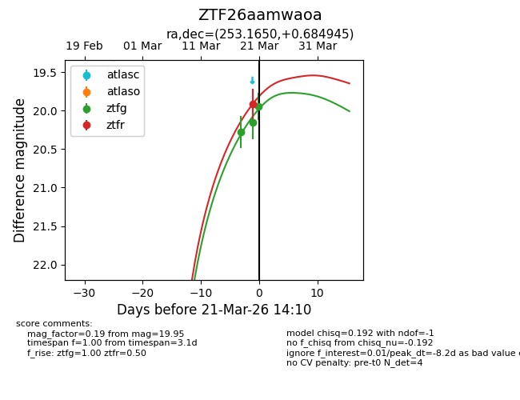
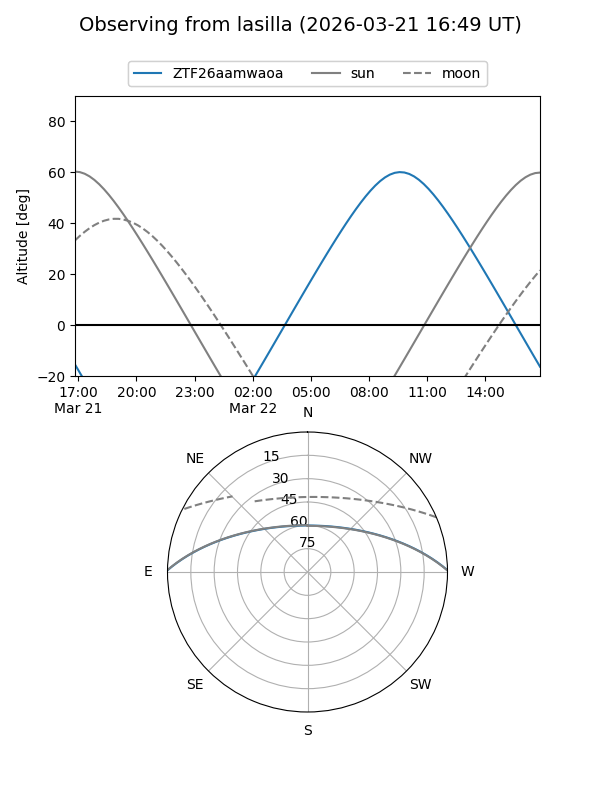
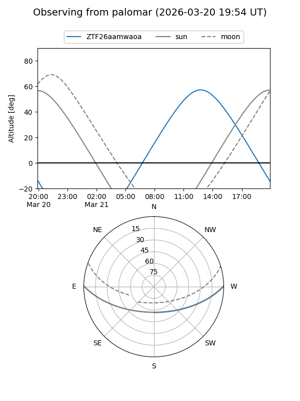
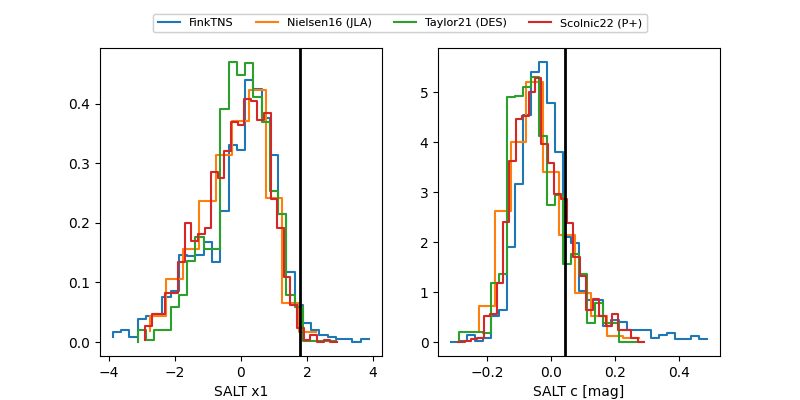

ZTF26aamwaoa
Target ZTF26aamwaoa at 2026-03-21 14:12
Aliases and brokers:
FINK: link
Lasair: link
ALeRCE: link
alt names
ZTF26aamwaoa (ztf,fink_ztf)
Coordinates:
equatorial (ra, dec) = 253.1650,+0.68495
equatorial (HMS+DMS) = 16:52:39.61,+00:41:05.80
galactic (l, b) = (19.0154,+26.50633)
Flags:
Photometry:
last ztfg=19.95, ztfr=19.91
3 ztfg, 1 ztfr detections
Lightcurve

Visibility


Additional plots
